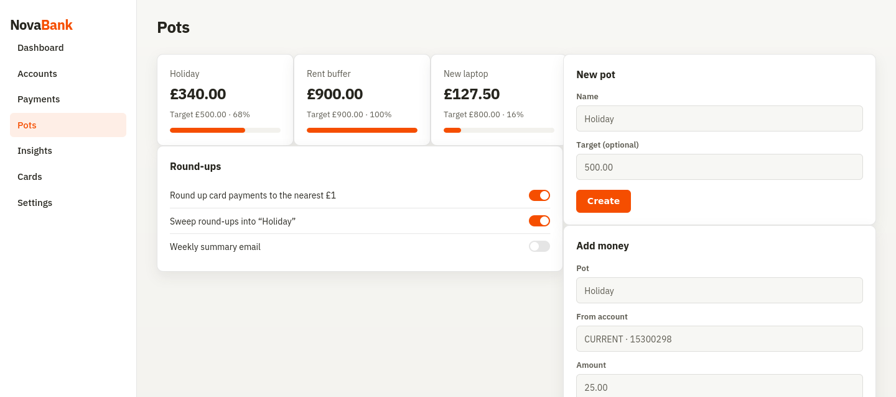

NovaBank
Jun to Jul 2026 · personal project



1. Purpose and tech stack
NovaBank is a small online banking demo with customer and admin roles. I built it to practise transfers, auth, and database transactions the way a real bank would need to handle them, not a happy path only demo. Money moves through a double entry ledger rather than a single mutable balance field.
| Layer | Choice | Reason |
|---|---|---|
| API | Python, FastAPI | Clear route modules and OpenAPI docs for checking endpoints |
| Database | PostgreSQL (Docker Compose); SQLite for quick smoke | Postgres for ACID and row locks on transfers |
| ORM / money types | SQLAlchemy, Decimal | Avoid float for currency |
| Auth | bcrypt + JWT with role claim | Customer vs admin gates; ownership checks on accounts and cards |
| UI | HTML, CSS, JavaScript, Chart.js | Browser client for dashboard, pots, cards, admin |
| Live updates | WebSockets | Balance refresh after money posts |
| Ops | Docker Compose, Railway deploy | Local Postgres parity; public demo |
2. Design (money path and system view)
Only the ledger transfer service is meant to post money rows. The browser calls REST with a JWT in localStorage and opens a WebSocket for live balance updates after posts.
Transfer steps
- Lock the accounts involved, ordered by id (
FOR UPDATEon Postgres) so two crossing transfers do not deadlock. - Insert a
transactionsrow (immutable header; optional idempotency key). - Insert balanced
ledger_entries(debits must equal credits for that transaction). - Update
balance_cachein the same database transaction. - Commit, or roll the whole unit back.
Customer deposit accounts are treated as liabilities (the bank owes the customer). Deposit
credits the customer and debits a system account; withdraw does the reverse; transfer
debits A and credits B. If a client repeats the same idempotencyKey, the
second call returns the original transaction instead of posting again.
3. Features implemented
- Register / login; new users get a current account, savings account, and debit card
- Deposit, withdraw, transfer by account number; statements and CSV export
- Savings pots, round ups on card payments, category spending breakdown
- Card freeze / unfreeze, spending limits, merchant category blocks (card numbers, PINs, and account closure are stubs)
- FX rate lookup and convert via Frankfurter / ECB (
/fx/rate,/fx/convert) - Session style device list ideas and audit log on money and admin actions
- Admin: customer search, account freeze, flagged transaction review
- Fraud rules that flag (not block) large amounts, burst outbound transfers, and outliers
- Card numbers masked in API responses; ownership checks on account and card routes
4. Folder structure
NovaBank/ ├── novabank/ │ ├── main.py # app, pages, WebSocket, /docs │ ├── api.py # REST routes │ ├── auth.py / database.py / features.py │ └── services/ │ ├── ledger.py # double-entry transfer service │ └── fraud.py # anomaly rules (flag, do not block) ├── templates/ + static/ # UI ├── tests/ # pytest (incl. concurrent Postgres suite) ├── seed_ledger.py ├── docker-compose.yml ├── Dockerfile └── requirements.txt
5. Timescale
| Phase | When | Work |
|---|---|---|
| Core ledger and auth | Jun 2026 | Accounts, JWT, deposit / withdraw / transfer in one DB transaction |
| Customer product surface | Jun to Jul 2026 | Pots, cards, statements, insights, WebSocket updates |
| Admin and fraud | Jul 2026 | Audit views, flag rules, worker scan |
| Hardening and deploy | Jul 2026 | pytest on ledger path, Docker Compose Postgres, Railway demo |
6. Challenges and how they were handled
| Challenge | Approach |
|---|---|
| Partial failure mid transfer | All ledger writes and balance cache updates sit in one database transaction |
| Concurrent transfers on the same accounts | Row locks ordered by account id on Postgres |
| Float rounding on money | Store and compute with Decimal |
| Double submit from a slow client | Idempotency keys on deposit / withdraw / transfer |
| Leaking card data or other users' accounts | Mask card numbers; check ownership on every sensitive route |
7. Testing
Automated tests use pytest on the ledger and transfer path. Run from the NovaBank repo:
pytest -q # locally: 9 passed, 2 skipped (skipped need NOVABANK_PG_URL) NOVABANK_PG_URL=postgresql+psycopg://... pytest -q tests/test_concurrent_postgres.py
What those suites cover, plus manual checks before calling a build done:
- Transfer A to B updates both sides and leaves balanced ledger entries
- Forced failure mid flow does not leave one side updated
- Customer cannot read another customer's account by id
- Admin routes reject a customer JWT
- Repeated idempotency key does not double post
- Postgres concurrency: racing withdrawals and crossed transfers leave a consistent ledger (
tests/test_concurrent_postgres.py)
8. Deployment and links
Local quick smoke: venv, pip install -r requirements.txt, seed, then
uvicorn novabank.main:app --reload --port 5002. For Postgres:
docker compose up --build, then seed with
DATABASE_URL pointed at the compose database. Public demo is on Railway.
Demo passwords in the NovaBank README are Password123 for seeded users such
as alex@example.com (customer) and admin@novabank.co.uk (admin).